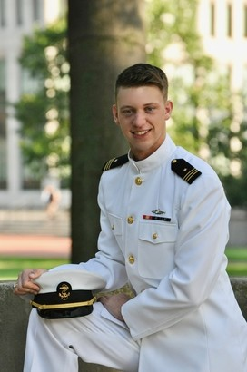

|  |
William T. Young Ensign, US Navy Graduate Research Fellow Department of Computer Science School of Engineering and Applied Science University of Virginia Charlottesville, VA 22904, USA
Email
|
|
|
|
A Brief Summary |
|
|
Education & Academics
I am a newly commissioned officer in the US Navy,
currently pursuing a master's degree in
computer science
at the University of
Virginia. My research interests include
cyber policy,
online privacy,
national security strategy, and the
Internet of Things (IoT).
As a midshipman at the US Naval Academy in Annapolis, I studied
Cyber Operations
and got to work with some amazingly dedicated and talented people on a wide range
of cutting-edge problems.
Athletics I spent 15 years of my life as
a competitive swimmer (100/200 breaststroke, 400 IM) and was fortunate enough
to attend the
US Junior National Championships
five separate times.
I have won individual championship titles at both the state and national levels.
In 2012, I qualified to compete for a slot on the US Olympic Team in two events at the
US Olympic Team Trials in Omaha, Nebraska. I enjoyed a brief stint on the world top 100 list
in the summer of 2011 and (as of 2016) my name can still be found on the
all-time top 100 lists for multiple age groups.
Interests I am a big fan of self-improvement books, military strategy, hiking, music, and a hot cup of coffee.
|
|
|
|
|